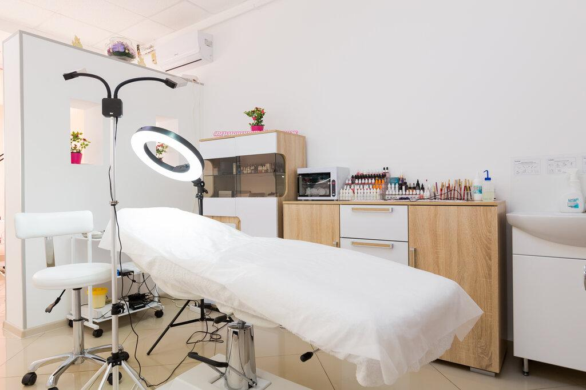

Khử Thâm Môi Có An Toàn Không? Giải Đáp Những Lo Lắng Thường Gặp
Khi tìm hiểu về dịch vụ khử thâm môi, bên cạnh câu hỏi về hiệu quả hay chi phí, rất nhiều khách hàng còn băn khoăn khử thâm môi có an toàn không. Đây là điều hoàn toàn dễ hiểu bởi môi là vùng da nhạy cảm và ảnh hưởng trực tiếp đến thẩm mỹ khuôn mặt.
Thực tế, mức độ an toàn của dịch vụ không chỉ phụ thuộc vào kỹ thuật thực hiện mà còn liên quan đến cơ sở làm đẹp, tay nghề kỹ thuật viên, thiết bị sử dụng và cách chăm sóc sau khi thực hiện.
Nếu đang cân nhắc khử thâm môi, bài viết dưới đây sẽ giúp bạn có cái nhìn rõ ràng hơn trước khi đưa ra quyết định.
Khử Thâm Môi Có An Toàn Không?
Nếu được thực hiện tại cơ sở uy tín, đúng quy trình và đúng chỉ định, khử thâm môi là một phương pháp thẩm mỹ phổ biến.
Để tăng tính an toàn, bạn nên quan tâm đến các yếu tố như:
- Kỹ thuật viên được đào tạo.
- Thiết bị và dụng cụ được vệ sinh đúng quy trình.
- Quy trình tư vấn rõ ràng.
- Đánh giá đúng tình trạng môi trước khi thực hiện.
- Hướng dẫn chăm sóc sau dịch vụ đầy đủ.
Những Yếu Tố Quyết Định Độ An Toàn
Tay Nghề Kỹ Thuật Viên
Đây là yếu tố quan trọng nhất. Một kỹ thuật viên có kinh nghiệm sẽ biết cách đánh giá nền môi, lựa chọn phương pháp phù hợp và thao tác cẩn thận để hạn chế tổn thương không cần thiết.
Thiết Bị Và Dụng Cụ
Máy móc hiện đại và dụng cụ đảm bảo vệ sinh giúp quá trình thực hiện diễn ra chính xác hơn. Bạn nên ưu tiên cơ sở minh bạch về quy trình vệ sinh và thay mới vật tư theo quy định.
Chất Lượng Mực
Mực sử dụng trong phun xăm thẩm mỹ cần có nguồn gốc rõ ràng và phù hợp với dịch vụ thực hiện. Đừng chỉ quan tâm đến giá, vì chất lượng vật liệu cũng là yếu tố ảnh hưởng đến trải nghiệm và kết quả.
Chăm Sóc Sau Khi Thực Hiện
Khách hàng cũng đóng vai trò quan trọng trong việc hỗ trợ môi hồi phục. Việc tuân thủ hướng dẫn của kỹ thuật viên sẽ giúp quá trình hồi phục thuận lợi hơn.
Đừng vội quyết định nếu chưa hiểu rõ tình trạng môi của mình. Hãy để kỹ thuật viên của ELLY PMU kiểm tra trực tiếp và tư vấn phương án phù hợp trước khi thực hiện.
Ưu đãi trong tháng: giá gốc 1.710K, giảm còn 599K. ELLY PMU có hỗ trợ làm tận nhà theo lịch hẹn.
Ai Nên Cân Nhắc Khử Thâm Môi?
Dịch vụ này thường được nhiều người quan tâm nếu:
- Môi thâm bẩm sinh.
- Môi sẫm màu do hút thuốc.
- Môi không đều màu.
- Muốn cải thiện màu môi trước khi phun màu.
Tuy nhiên, mỗi trường hợp sẽ cần được đánh giá riêng để lựa chọn phương án phù hợp.
Khi Nào Nên Hoãn Thực Hiện?
Nếu môi đang có dấu hiệu tổn thương hoặc bạn đang gặp vấn đề sức khỏe, hãy trao đổi với cơ sở thực hiện để được tư vấn thời điểm phù hợp. Không nên tự ý thực hiện khi chưa được đánh giá.
Khử Thâm Môi Có Nguy Hiểm Không?
Khử thâm môi có nguy hiểm không phụ thuộc chủ yếu vào nơi thực hiện, tay nghề kỹ thuật viên và cách chăm sóc sau đó. Khi quy trình thiếu vệ sinh hoặc khách hàng tự ý chăm sóc sai cách, môi có thể dễ kích ứng, lâu hồi phục hoặc lên màu không đều.
Khử Thâm Môi Có Hại Không?
Với người phù hợp và được thực hiện đúng quy trình, khử thâm môi không phải là dịch vụ gây hại như nhiều người lo lắng. Điều quan trọng là không làm khi môi đang viêm, nứt nẻ nặng hoặc khi cơ thể đang có vấn đề cần theo dõi.
Làm Sao Chọn Địa Chỉ Khử Thâm Môi Uy Tín?
Một địa chỉ khử thâm môi uy tín nên có quy trình tư vấn rõ ràng, kiểm tra nền môi trước khi làm, dụng cụ sạch, thông tin chi phí minh bạch và hướng dẫn chăm sóc sau dịch vụ. Bạn cũng nên xem hình ảnh thực tế và phản hồi của khách hàng trước khi quyết định.
Những Hiểu Lầm Thường Gặp
Khử Thâm Môi Luôn Nguy Hiểm
Không đúng. Mức độ an toàn phụ thuộc vào nhiều yếu tố như cơ sở thực hiện, quy trình và việc tuân thủ hướng dẫn.
Giá Càng Cao Càng An Toàn
Chi phí không phải yếu tố duy nhất. Bạn nên đánh giá tổng thể về chất lượng dịch vụ, tay nghề kỹ thuật viên và phản hồi của khách hàng.
Không Cần Tư Vấn Trước Khi Làm
Việc kiểm tra tình trạng môi trước khi thực hiện là bước quan trọng để lựa chọn phương án phù hợp.
Checklist Trước Khi Quyết Định


Câu Hỏi Thường Gặp
Có thể an toàn nếu được tư vấn đúng, thực hiện bởi kỹ thuật viên có kinh nghiệm và chăm sóc theo hướng dẫn.
Mức độ an toàn phụ thuộc vào nhiều yếu tố, trong đó có cơ sở thực hiện và việc tuân thủ quy trình.
Người đang có tổn thương môi, viêm loét hoặc tình trạng sức khỏe chưa ổn định nên trao đổi trước với kỹ thuật viên và chỉ làm khi phù hợp.
Thông thường không cần nghỉ dưỡng dài ngày, nhưng cần chăm sóc nhẹ nhàng và tránh các thói quen dễ làm môi kích ứng trong giai đoạn đầu.
Giữ môi sạch, dưỡng môi theo hướng dẫn, uống đủ nước, không tự bóc lớp bong và hạn chế các yếu tố dễ làm môi thâm trở lại.
Nếu bạn vẫn còn phân vân về việc khử thâm môi có an toàn không, hãy bắt đầu bằng một buổi kiểm tra và tư vấn. Việc hiểu rõ tình trạng môi sẽ giúp bạn đưa ra lựa chọn phù hợp và tự tin hơn.
Kết Luận
Khử thâm môi có an toàn không là câu hỏi quan trọng trước khi lựa chọn bất kỳ dịch vụ thẩm mỹ nào. Thay vì chỉ quan tâm đến chi phí, bạn nên ưu tiên cơ sở uy tín, được tư vấn rõ ràng và thực hiện đúng quy trình để có trải nghiệm an tâm hơn.